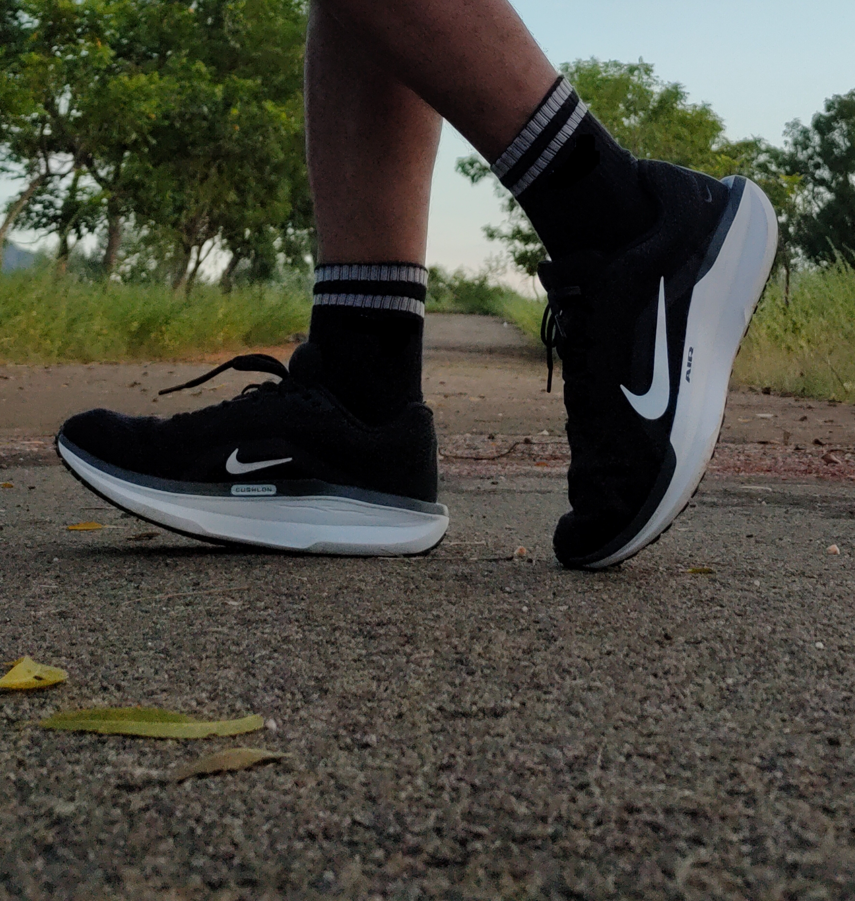
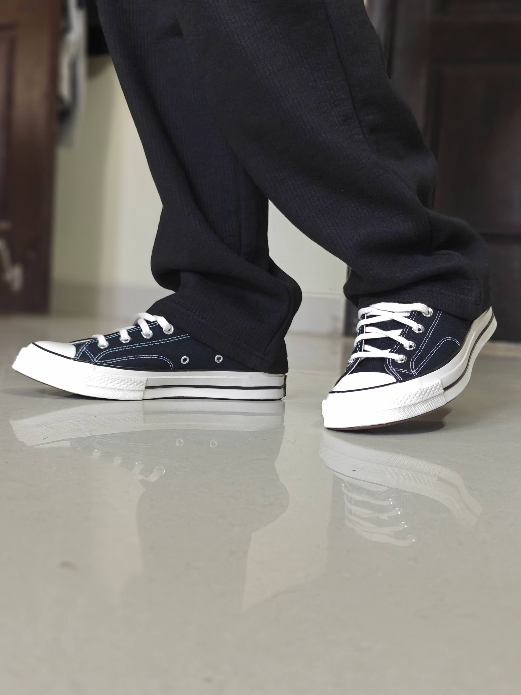

My Current Rotation

Running & Walking
Nike Winflo 11
Color: Black
My go-to choice for daily mileage and long walks. The cushioning provides the support I need for consistent movement.
 Badminton
Badminton
Li-Ning Ultra Force
Color: Black/Red
Specifically used for the court. These provide the lateral stability and grip required for quick movements.

Lifestyle
Chuck 70 Converse
Color: Black Low
The classic choice for meeting friends or shopping. Timeless design that works for any casual outing.
The Wishlist
I'm currently researching and exploring new additions to my collection. Stay tuned for updates as I find my next pair!